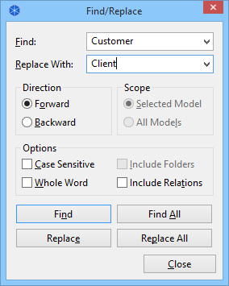

If you select the first selection tool from the Palette, click somewhere on the View to give it the focus and then hold the Space bar down the cursor will change to a hand and you can pan the View. You can also pan around the View by holding down the middle mouse button.
It is possible to move and resize selected objects in a View by using the computer keyboard instead of a mouse. To move an object, press the period key (".") once to reveal the MOVE cursor. Then use the Arrow keys, followed by the ENTER key to commit the move. To resize the object, press the period key (".") until the RESIZE cursor appears at the desired resize handle. Press the ENTER key to commit the resize.
Sometimes you may find that a concept is outside the area of the View area and you wish to draw a new connection between one concept and another concept outside of the View area (the scrollbars would normally need to be used). To do so, simply click on the source concept after selecting the connection tool and then hover the mouse at the edge of the Viewport. After a short pause, the View will automatically scroll.
You can zoom in and out of a View in a number of different ways:
Used in combination with the Outline View you can easily navigate around large diagrams.
It is also possible to find and replace concepts in a View by name.
Find and Replace dialog